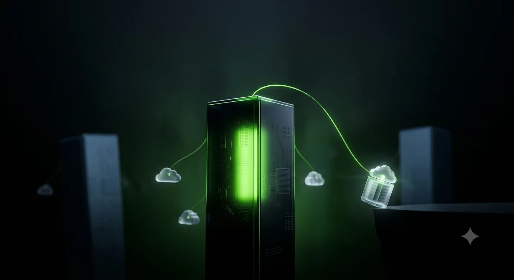

In its most recent quarter, Nvidia returned a record $20 billion to shareholders. In May, its board authorized another $80 billion in buybacks; in June, it raised $25 billion in the bond market — the balance sheet of a company with no financing problem of its own.[1] On July 1, it announced a program to help companies that cannot afford its chips buy them anyway, in exchange for a share of the profits.[2]
The two sit oddly together. A company that hands out that much to shareholders does not usually need to lend to its own customers.
In February, I called this theCOMECON model: Nvidia keeps the independent GPU clouds, the neoclouds, captive through four instruments: GPU allocation, equity stakes, credit enhancement, and demand backstops.[3] On July 1, it took two of them, the credit enhancement and the backstop, and gave them a product name.
The program is a “revenue-sharing and credit-support model.” A cloud puts Nvidia GPUs on the floor without carrying the full capital cost, draws token credits against future capacity today, and hands Nvidia its standard hardware margin plus a recurring, usage-linked share of the cloud revenue that capacity generates.[2] How large that share is, Nvidia has not said. The first named partners are Sharon AI, deploying up to 40,000 Grace Blackwell GB300s in Australia, and Firmus, building toward 360 megawatts and 170,000 GPUs in Batam, Indonesia.[4] The arrangement is not wholly new; Nvidia ran a demand backstop with CoreWeave and took an equity stake in OpenAI. What is new is the packaging: the credit support and a revenue-share leg under one name, one template, one marketing page.[5]
The bullish read wrote itself within hours: recurring revenue, a widening moat, and a supplier tying itself to customer usage rather than a single sale. The bearish read wrote itself too: circular financing, vendor-funded demand, the fiber and telecom buildouts in period costume. Both are on offer. Neither is the question that matters.
The question that matters is why the market's strongest supplier is doing this now. The answer isn’t on Nvidia’s blog; it’s on its customers’ earnings calls.
On April 29, Google said it would begin delivering its TPUs to a select group of customers for their own data centers, its formal move into the merchant-silicon market Nvidia has long dominated.[6] Weeks later, AWS confirmed it is exploring selling Trainium to outside data centers.[7] For a decade, the hyperscalers built custom chips and kept them in-house; in 2026, both began selling them. Nvidia’s largest customers are becoming its competitors, from the top of the stack down. (I argued in May that Google is the one to watch: its chip runs its own frontier models, while Amazon’s mostly runs rented workloads — the line that separates a silicon business from a silicon cost center.[8])
Take Nvidia’s case at its strongest. The financing gap is real; lenders have been wary of hardware whose resale value no one can yet model, so builders with genuine demand still can’t get compute funding fast enough. The inference tenants Nvidia names alongside the program (Baseten, Fireworks AI, Together AI) are well-capitalized companies, not strays. And a revenue-share cuts both ways: if a partner’s utilization falls, so does Nvidia’s cut. That is exposure to the customer’s success, not a lien on it. On its own terms, the program clears a bottleneck and aligns incentives, and that reading is not wrong.
It is incomplete because of when it arrived. A supplier that spent a decade as the only game in town does not wander into neocloud finance in the same quarter that its two largest customers start selling their own chips. The gap is real; the timing is no coincidence; the calendar tips the scales toward defense. Whatever else it does, the program buys the loyalty of the layer beneath the hyperscalers, the independent clouds with no silicon of their own; at the moment, the layer above turns competitive. The revenue-share ties their economics to Nvidia’s; the credit-support makes Nvidia the reason some of them can exist at all.
There is a sharper edge, and it is the subject of the next piece. Nvidia’s CFO frames the program as serving companies that have demand but cannot secure financing fast enough; even long-term commitments haven’t unlocked the capital.[9] That describes the borrowers that conventional lenders turn away.
How far down the collateral ladder the model reaches is the open question.
Firmus is a large greenfield campus and is not obviously a distressed borrower. Sharon AI, the other named partner, is another matter: it was listed on Nasdaq in February and carries a market capitalization above a billion dollars on almost no revenue, and its financing stack and headline contracts are already the subject of a detailed short-seller report.[10] I’ll take those allegations through the primary filings next. Nvidia, for the record, holds no equity in it; the hold runs entirely through the revenue-share and the credit line.[11]
The backstop was always there; on July 1, it got a name, which is what usually happens to an improvisation just before it becomes a system. Whether it is mostly defense or mostly reach, the next deals will say. If the template stays with capital-constrained clouds, it is the base-reinforcement it looks like; if Nvidia extends it to well-funded clouds that could finance the GPUs themselves, the defensive read was wrong, and this is Nvidia annexing cloud economics wherever it can. Either way, the neocloud it piloted on is where the risk is hiding, and the filings are where the next piece goes.
Notes
[1] NVIDIA returned approximately $20 billion to shareholders in Q1 FY2027, and its board authorized an additional $80 billion in repurchases on May 18, 2026:NVIDIA Q1 FY2027 results (Form 8-K), SEC EDGAR. The $25 billion multi-tranche notes offering priced on June 18, 2026:NVIDIA Form 8-K, June 18, 2026, SEC EDGAR.
[2]NVIDIA Unlocks AI Compute at Scale, NVIDIA blog, July 1, 2026(co-authored by CFO Colette Kress).
[3]Jensen’s COMECON: How Nvidia Built an Empire of Captive Clouds, The AI Realist, Feb. 14, 2026.
[4] Firmus scale from NVIDIA blog [2]; Sharon AI terms (six-year collaboration, 72MW of new Australian capacity, up to 40,000 Grace Blackwell GB300) fromSharonAI Holdings, “Six Year Strategic Compute Collaboration with NVIDIA,” June 12, 2026(BusinessWire; corresponds to the Company’s Form 8-K filed June 12, 2026).
[5] The credit-support and backstop model packages arrangements Nvidia previously ran case by case — a demand backstop with CoreWeave and a reported ~$30 billion equity investment in OpenAI (a separate data-center lease guarantee was reported to be under discussion, not executed, as of mid-2026):AI Weekly, July 2026.
[6] Sundar Pichai, Alphabet Q1 FY2026 earnings call, April 29, 2026:Google to sell TPUs to a “select group of customers,” Data Center Dynamics.
[7] AWS signaled external Trainium sales in Andy Jassy’s April 2026 shareholder letter (The Next Web); AWS’s Peter DeSantis confirmed exploratory talks in June 2026 (reported by Bloomberg;summary).
[8]Two Chips, One Decade, One Winner, The AI Realist, May 27, 2026.
[9] CFO framing that the program targets companies with demand but insufficient access to financing:Nvidia launches revenue-sharing model, Yahoo Finance, July 2026; see also NVIDIA blog [2].
[10]Bleecker Street Research, “SharonAI (SHAZ),” April 30, 2026. Report authored by a short seller with a disclosed position; allegations to be examined against primary filings in the follow-up piece.
[11] SharonAI corrected its FY2025 Form 10-K, which had described NVIDIA as a “strategic shareholder,” to state that NVIDIA holds no equity securities of the company:SharonAI Holdings Form 8-K correction.